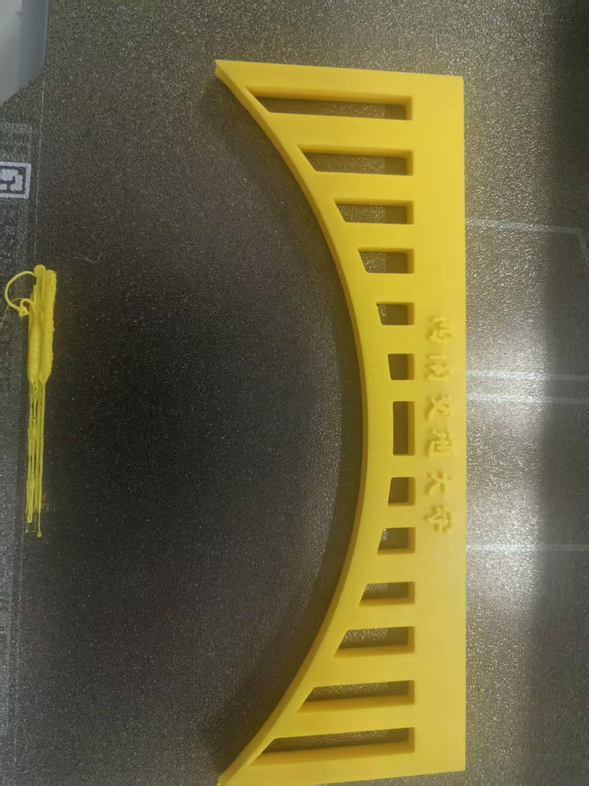
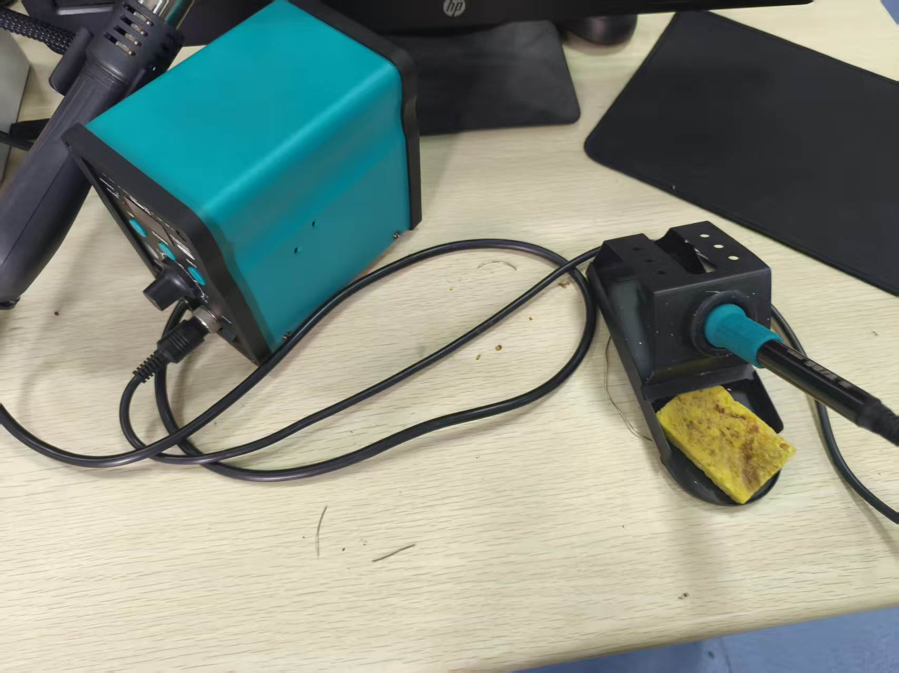
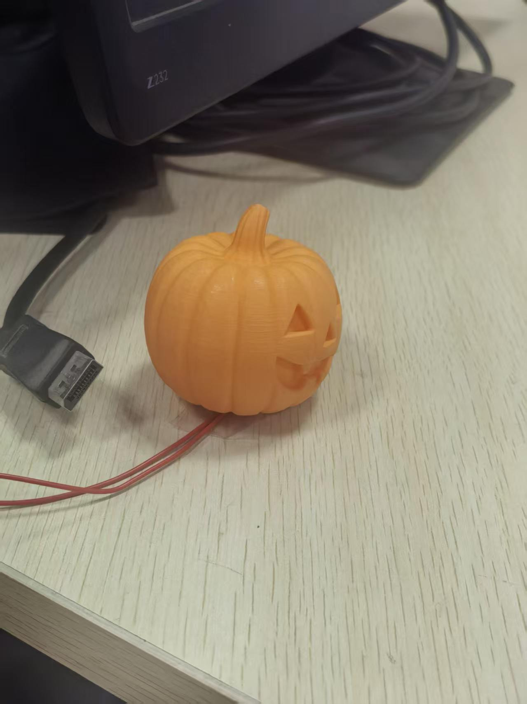
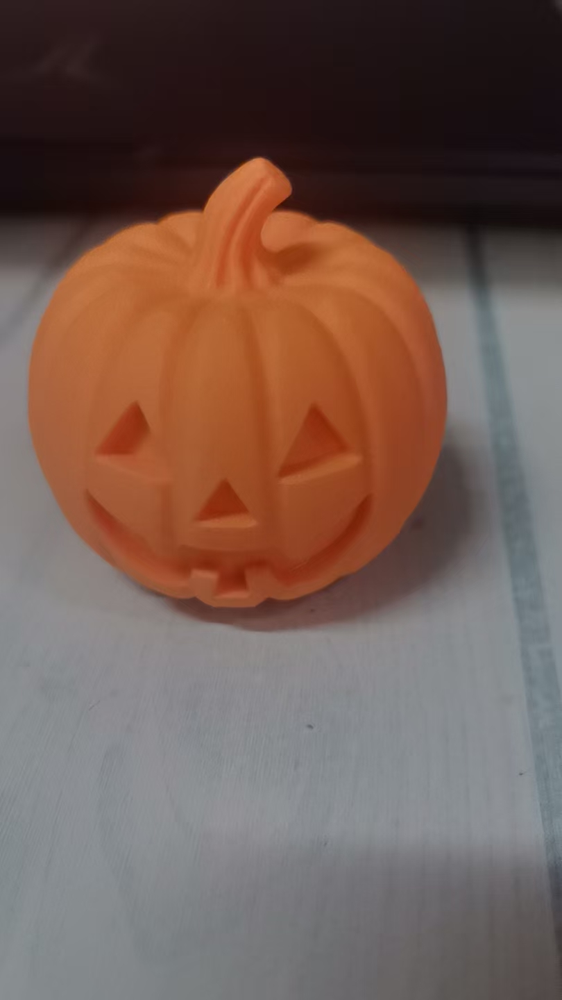
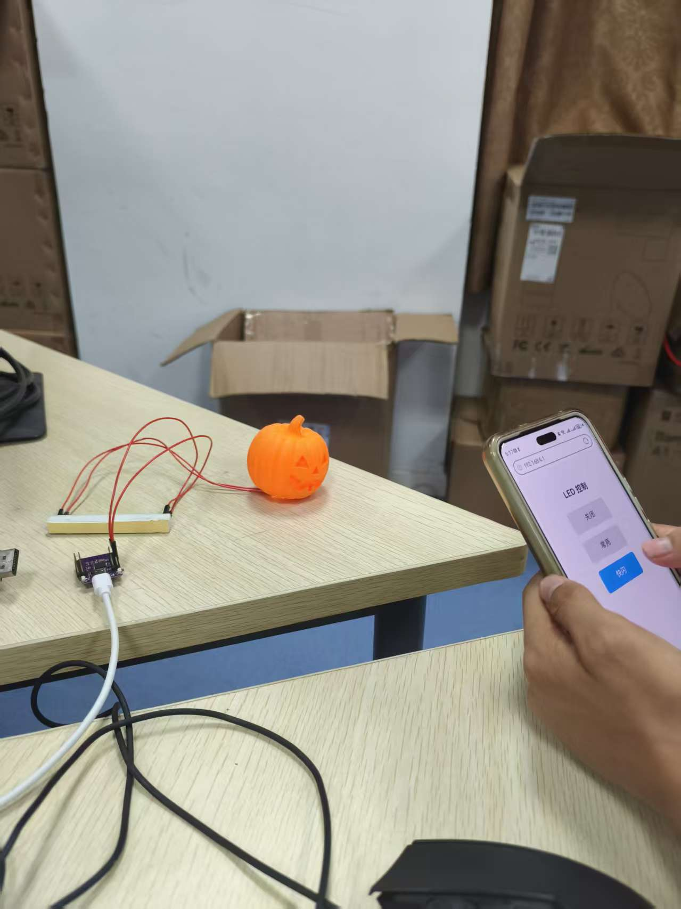
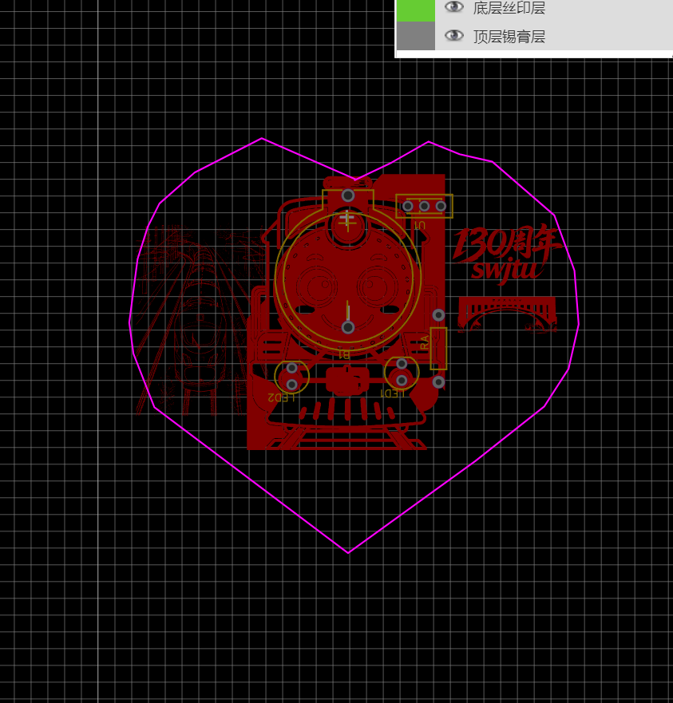
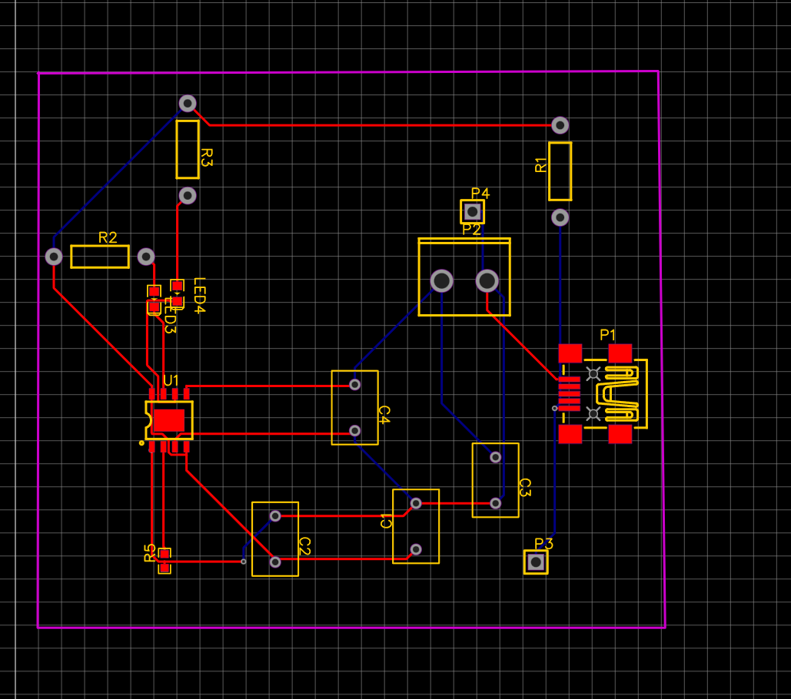
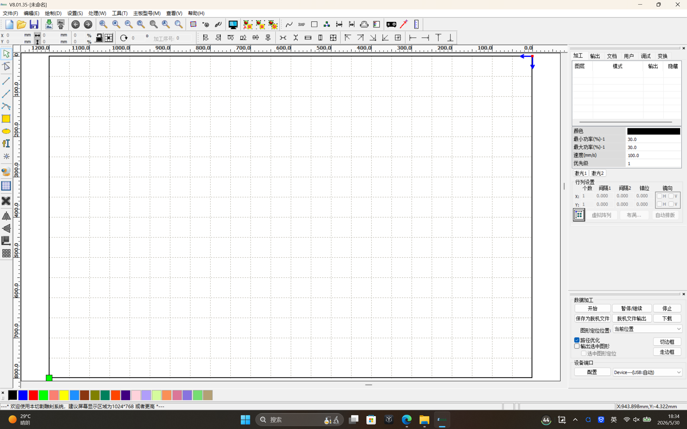
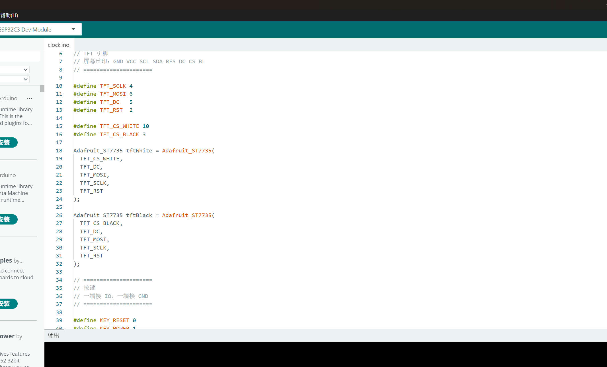

第一阶段：搭建个人网站
一切的开始，源于我想要拥有一个属于自己的学习记录空间。在这个信息爆炸的时代，我发现零散的笔记很容易丢失，也不方便回顾和分享。于是，我决定学习如何搭建一个个人网站，用它来记录我在电子学习道路上的点点滴滴。
我选择了Gitee作为我的代码托管平台，因为它在国内访问速度快，而且对个人用户非常友好。注册账号、创建第一个仓库、学习Git的基本命令，每一步对我来说都是全新的挑战。我还记得第一次用git push命令把代码推送到远程仓库时的激动心情，虽然只是一个简单的index.html文件，但它标志着我的网站正式诞生了。
这个网站不仅是我学习成果的展示平台，更是我成长的见证者。从这里开始，我将一步步探索电子世界的奥秘，把每一个学习阶段、每一个作品都记录下来，既是对自己的总结，也希望能给同样在学习电子的朋友们一些参考和启发。
第二阶段：初识3D打印
第一次接触3D打印技术，是在学校的创客空间。当我看到打印机喷头一点点地把塑料丝融化、堆积，最终形成一个完整的三维物体时，我被这种"凭空造物"的能力深深震撼了。那一刻，我就下定决心，一定要学会这项神奇的技术。
学习3D打印的过程并不轻松。我从最基础的3D建模软件开始学起，对着教程一点点地练习，从简单的立方体、圆柱体，到稍微复杂一点的组合体。我还记得第一次设计自己的模型时，光是调整尺寸和倒角就花了好几个小时。
打印的过程也充满了挑战。第一次打印时，因为平台没有调平，模型粘不牢，打印到一半就失败了。后来又遇到了翘边、层纹明显、拉丝等各种问题。但我没有放弃，通过查资料、向学长请教，一点点地调整打印参数，终于成功打印出了我的第一个作品——这个带有"西南交通大学"字样的弧形装饰件。
看着自己设计的模型从数字变成实实在在的物体，那种成就感是无法用语言形容的。3D打印不仅让我学会了一项新技能，更让我明白了一个道理：只要有耐心和毅力，再难的事情也能做成。

第三阶段：学习焊接技术
焊接是电子制作的基本功，想要自己动手做电子作品，就必须先学会焊接。当我第一次拿起电烙铁时，心里既兴奋又紧张，生怕烫到自己，也怕把昂贵的元器件焊坏。
我从最基础的焊接练习开始，先在废电路板上练习焊锡的融化和流动，学习如何正确地加热焊点、送锡。一开始，我焊出来的焊点要么是虚焊，要么是锡太多形成了锡球，甚至还把焊盘烫掉过。但我没有气馁，一遍又一遍地练习，慢慢地找到了感觉。
我的第一个正式焊接任务是给LOLIN S2 Mini开发板焊接排针。这块开发板的排针非常密集，对焊接的精度要求很高。我屏住呼吸，小心翼翼地一个引脚一个引脚地焊，花了将近一个小时才完成。当我把开发板插到电脑上，看到它能够正常被识别时，我激动得跳了起来。
通过学习焊接，我不仅掌握了一项实用的技能，更培养了自己的细心和耐心。焊接需要全神贯注，容不得半点马虎，这对我以后的学习和工作都有很大的帮助。


第四阶段：嵌入式开发入门
如果说3D打印和焊接是电子制作的"身体"，那么嵌入式开发就是电子作品的"灵魂"。学习嵌入式开发，让我能够通过代码控制硬件，实现各种有趣的功能。
我选择了ESP32作为我的入门芯片，因为它功能强大、价格便宜，而且自带WiFi模块，有非常丰富的学习资源。我从最简单的点亮LED灯开始学起，学习Arduino开发环境的搭建、基本的语法结构、GPIO口的控制。当我看到LED灯按照我写的代码规律地闪烁时，我感受到了编程的魅力。
我的第一个完整的嵌入式作品就是这个WiFi控制的南瓜灯。我先用3D打印机打印出南瓜的外壳，然后在里面安装了LED灯和ESP32开发板。通过编写代码，我不仅实现了LED灯的渐变效果，还为它加入了WiFi控制功能。
我搭建了一个简单的Web控制页面，通过手机就能连接到ESP32的WiFi，实时控制南瓜灯的开关、常亮和快闪模式。当我第一次用手机点亮南瓜灯时，看着它发出温暖柔和的光芒，那种成就感难以言喻。这是我第一次真正实现了"软硬结合"，也让我对嵌入式开发产生了更浓厚的兴趣。



第五阶段：PCB设计进阶
在做了几个面包板项目之后，我发现面包板虽然方便，但线路杂乱，容易接触不良，而且不美观。于是，我决定学习PCB电路板设计，制作属于自己的专业电路板。
我选择了立创EDA作为我的设计软件，因为它是国产软件，界面友好，而且有非常完善的元器件库。学习PCB设计的过程比我想象的要复杂得多，从绘制原理图到封装选择，再到布局布线，每一步都需要严谨的思考。
我的第一个PCB设计作品是这款心形的火车头主题电路板。之所以设计这个主题，是为了纪念西南交通大学建校130周年。西南交大作为中国轨道交通事业的发源地，有着深厚的历史底蕴，而火车头正是交大精神的象征。
在设计过程中，我遇到了很多困难，比如线路交叉、电磁干扰、布局不合理等。但通过不断地学习和修改，我终于完成了设计。当我拿到从工厂寄回来的电路板时，我激动得爱不释手。虽然它还有很多不足之处，但这是我亲手设计的第一块电路板，对我来说意义非凡。


第六阶段：激光切割入门，掌握EagleWorks软件
在掌握了3D打印、焊接、嵌入式开发和PCB设计之后，我开始学习激光切割技术。激光切割是一种非常精密的加工技术，可以精确地切割亚克力、木板、皮革等各种材料，制作出精美的外壳、结构件和装饰品。
我使用的是EagleWorks激光切割控制系统，这是一款非常常用的激光切割软件。第一次打开软件时，我被它丰富的功能和复杂的参数设置吓到了。但通过老师的指导和自己的摸索，我逐渐掌握了软件的基本操作。
我学习了如何导入矢量图形、设置切割和雕刻参数、调整激光功率和速度。不同的材料需要不同的参数设置，比如切割亚克力需要较高的功率和较慢的速度，而雕刻木板则需要较低的功率和较快的速度。
虽然现在还只是入门阶段，但我已经迫不及待地想要用激光切割为我之前的作品制作配套的外壳和底座了。我相信，激光切割技术将会为我的电子创作打开一扇新的大门，让我能够制作出更加专业和精美的作品。

第七阶段：期末综合设计——双人下棋计时器
作为本学期的期末综合设计，我制作了一个功能完整的双人下棋计时器。这个项目整合了我这一学期学到的所有技能：硬件搭建、嵌入式编程、3D建模，是对我学习成果的一次全面检验。
硬件方面，我使用ESP32作为主控芯片，搭配ST7735 1.8寸TFT彩色屏幕显示时间，四个独立按键分别控制双方的计时启停和重置，还加入了DS3231高精度时钟模块保证计时准确。虽然面包板上的接线看起来有些杂乱，但每一根线都经过了仔细的规划和测试。
软件方面，我在Arduino IDE中编写了完整的计时逻辑，实现了双方轮流计时、时间显示、按键防抖等功能。为了让界面更加美观，我还学习了Adafruit_ST7735库的使用，设计了简洁清晰的数字显示界面。
为了让作品更加完整，我还用Blender软件设计了专属的外壳模型，准备用3D打印机打印出来。这个项目让我深刻体会到了从需求分析到成品落地的完整开发流程，也让我对电子制作有了更深入的理解。


